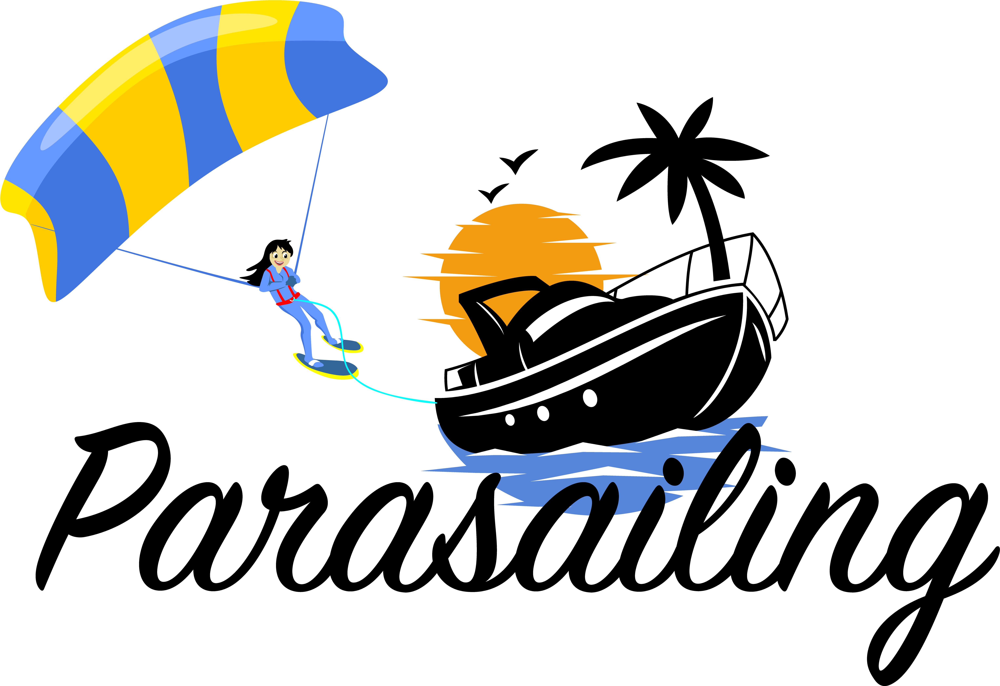

WATER SPORTS
PARASAILING
Enjoy thrilling aerial parasailing experience at one of the most popular beaches in Goa, performed under expert instructors with international safety measures. The flying range would be a 500-meter water ride on a speed a boat. One of the most famous things to do at Majorda Beach is Parasailing In South Goa.
BANANA RIDE
Banana ride is a Banana shaped tube connected to the speed boat which pulls you along the water at high speed. Once you ride on this Banana tube you have to hold tight as possible as the speedboat attempts to flip the inflatable boat by dropping its passengers into the water.

BIKE RIDE
Jetlev Flyer is an exciting ride above the water. It is not suitable for heart patients and children under the age of 18. Exploring different water sports can make you smile vibrantly.

FLY BOARD
The Flyboard is a board with straps so as to secure your feet. Beneath each foot a cold water jetpack is fixed. Those jetpacks get water from this Jet Ski and it is the propulsion that makes you fly in the air and then you dive under the water. You go as high as up to 30 ft.
BUMPER RIDE
Bumper ride is an adventurous water ride in which you are settled in a huge rubber tube filled with air and pulled by a speed boat into the open sea. The main goal of the riding bumper or tubing is to wave on as long as you can while the speed boat sparkle across the mighty waves in a bid to throw you off.

SCUBA DIVING
Scuba diving is a mode of underwater diving where the diver uses a self-contained underwater breathing apparatus (scuba), which is completely independent of surface supply, to breathe underwater. Scuba divers carry their own source of breathing gas, usually compressed air, allowing them greater independence and freedom of movement than surface-supplied divers, and longer underwater endurance than breath-hold divers.